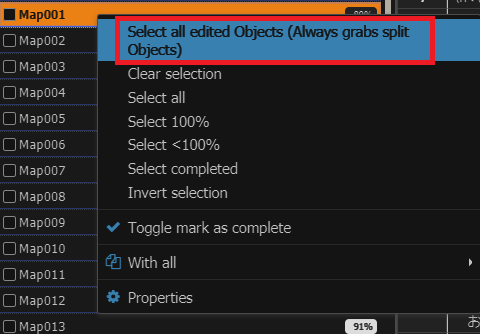

The translation editor is a spreadsheet-like grid (built on Handsontable): one row per extracted text, one column for the original text and further columns for translations and processing results. This page covers the grid layout, editing, selection, keyboard shortcuts, context menus, and saving.
Parsing a game fills the Objects panel on the left with the files the texts came from. Select an object to load its rows into the grid; the Filter box above the list narrows it by name, and the small buttons below it toggle or invert the checkboxes, remove checked files, or add a new object. Objects grouped under the * directory are reference objects — internal data rows that some tools read but that are not exported as files. A new project starts with six columns:
| Column | Meaning |
|---|---|
Original Text [0] | The text extracted from the game. Read-only once it has content — this column is the key that ties the row back to the game data. |
Initial Translations [1] | Where machine translation lands by default. |
Translation Corrections [2] | Your manual edits and fixes. |
Wrapped translations [3] | Output of Automatic Word Wrapping, so wrapped text never overwrites your translation. |
Errors [4] | Error annotations produced while processing. |
Overwrite [5] | Manual final say — anything written here beats all other columns. |
The columns exist so automatic results and manual corrections never overwrite each other: re-translating into column 1 does not touch your corrections in column 2. Right-click a column header to Insert column right, Duplicate column, Rename this column, Remove this column, or set the Column width. A project can hold up to 15 columns. Column 0 cannot be moved or reordered; the other columns can be dragged.
Default translation for the cell contents, and Context translation — see Context Translation. The left side of the pane shows the original text with a romaji reading aid and the row's raw data — see Cell Info Panel.On export and apply, only one translation per row is written into the game: the rightmost non-empty cell, scanning from the last column back to column 1 (the original text column is never used). This is what gives the columns their workflow:
Overwrite cell means the wrapped text (column 3) wins if present, otherwise your corrections (column 2), otherwise the initial translation (column 1).Overwrite cell to force a specific final result for a row.Objects panel.Quick find box in the editor toolbar highlights all matches in the currently loaded grid as you type; the search button beside it opens the full Find & Replace window.Selections feed the translate commands (Translate here, Merge then translate, Translate like this), tagging, and deletion. See Find & Replace for searching across the whole project.
The editor toolbar also holds the grid toggles: Toggle Active Cell Info, Automatically set selected original text to clipboard (copies the original text of the selected cell to the clipboard on every selection), Toggle word wrapping, Use Monospace font, Resize Font for the grid, and Remove all translation from this file. Removing a file from the project is done from the file's right-click menu instead.
| Shortcut | Action |
|---|---|
| F1 | Open the documentation |
| F11 | Maximize the main window |
| Esc | Close popups and overlay windows; in the grid, deselect the current cell |
| Ctrl+O | Open a project or translation file |
| Ctrl+S | Save the project |
| Ctrl+F | Open the Find window (Find tab) |
| Ctrl+H | Open the Find window (Replace tab) |
| Ctrl+G | Translate the selected cell(s) with the active translator |
| Ctrl+Shift+G | Merge then translate: send the selected cells to the translator as one line, writing the result to the active cell |
| Ctrl+L | Translate like this: apply the selected cell's translation to every row with the same original text across the project |
| Ctrl+Shift+C | Copy the selected cells to the clipboard joined into a single line |
| Ctrl+T | Open the Tagging dialog for the selected cell(s) |
| Shift+Del | Delete the selected row(s), after confirmation |
| Alt+Del | Clear context translations on the selected row(s), after confirmation |
| Alt+Down / Alt+Up | Go to the next / previous untranslated row |
| Alt+N | Jump to the new key row at the bottom of the grid, which appends a row to the current file |
| Numpad Enter | Commit the current edit and move to the next row |
| Ctrl+0 … Ctrl+9 | In the bottom cell editor: insert the content of column 0…9 at the caret |
Right-clicking the grid opens a menu whose contents depend on the selection:
Add comment / Delete comment (per-cell notes, searchable), Translate here, Translate using..., Merge then translate, Translate like this, a Tags submenu (see Cell Color Tags), Delete Row, Clear Context Translation, Create Automation, Run Automation, and Row properties (shows the row's original text, its context list and its best translation).Column width, Insert column right, Duplicate column, Remove this column, Rename this column.Delete Row and Row properties.Right-clicking an entry in the Objects panel selects, marks and exports files — including the Export into... commands that write only the checked files — described in Your First Translation Project.

The Objects panel context menu: bulk selection and per-file actions.
The Objects panel context menu applies several tools to every checked file (or to all files, when none are checked) via the With all / With N selected submenu:
Wrap texts — the legacy per-file word wrap dialog; prefer the Automatic Word Wrapping toolbar button unless you need its per-file behavior.Trim — removes the leading and trailing whitespace of every line in the chosen column(s). A confirmation warns that it cannot be undone.Auto Padding — the counterpart: it copies the leading whitespace of each line of the original text onto the corresponding lines of the translation, restoring the indentation the translation lost. Also asks for the target column(s) and confirms first.Mark as complete / Un-mark as complete, Revert to original, Clear translation, Delete files, Import from..., Export into... and Create Automation / Run Automation (see Automation Editor) round off the menu.The Toggle grid information button (in the right panel toolbar) opens a side menu with display options for the grid:
Show row header info — writes a small info line into each row header. For RPG Maker projects this is typically the speaker the line belongs to (the actor of a nameplate), so you can see who says what while scrolling. Row header width widens the header if the text does not fit.Display marker on organic cells — marks rows whose translation was written by a human instead of a translation engine.Leave trail on cell visit — remembers which cells you have already visited; Display trails on visited cells shows that record in the grid. Together they make it easy to keep track of what was already reviewed in a large file..trans / .json file is a single JSON document; the portable .slrproj format packages the whole project, including the staged game data..slrproj project can also rotate numbered backup copies (.1.bak, .2.bak, …) of the previous save — enable it and choose how many copies to keep in the Options window.Open Project, the Open toolbar button, or by dropping the file onto the main window.